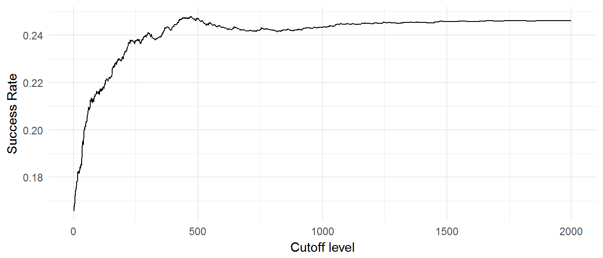
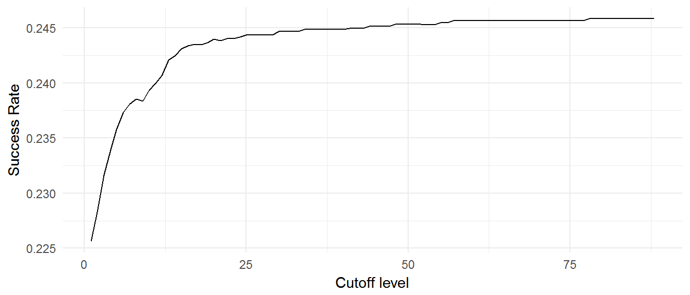
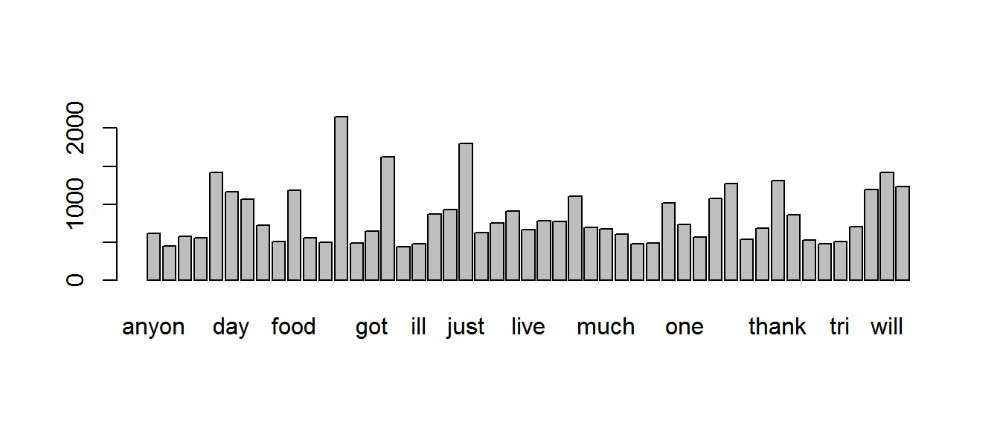

Kaggle launched a machine learning challenge based on the Random Acts of Pizza (RAOP) project on Reddit. The basic premise of ROAP is that people can buy a pizza for any random person that asks for it. People have made requests by describing hard times, asking very politely, or even offering to write poems in return. The challenge was to predict whether a request would be successful and receive a free pizza. Here is the link to the competition page: Link.
library(RandomActsofPizza)
library(plyr)
library(dplyr) # data manipulation
library(ggplot2) # plotting
library(httr)
library(tm)You could get the data directly from the Kaggle website but they’ll require you to sign in and accept the terms of the competition. Unfortunately, they haven’t developed an API to do this programatically but you can get it from my Dropbox. The data downloads as a 1.7MB zip file in JSON format.
trainURL <- "https://onedrive.live.com/download?cid=CE1B639CAE3DDA03&resid=CE1B639CAE3DDA03%2128205&authkey=AMx1Yp1M2GIga6o"
Train.raw <- httr::content(GET(trainURL),"parsed")
train <- PrepareData(Train.raw)
testURL <- "https://onedrive.live.com/download?cid=CE1B639CAE3DDA03&resid=CE1B639CAE3DDA03%2128034&authkey=AJSyWkddIKdJaCg"
Test.raw <- httr::content(GET(testURL),"parsed")
test <- PrepareData(Test.raw)The Kaggle website describes the requester_user_flair field as used to say if the requester received pizza, received pizza and gave pizza, or didn’t receive any pizza. This seems like it would give away the outcome of the request so we’ll check to see if its in the test dataset. This field as well as a few others are only in the training dataset. There are only 17 fields in the test set while there are 32 fields in the training set. These fields will be removed to prevent us from building model on data points that won’t be available later when we apply the model to the test dataset.
#remove columns not in test set and put in the same order
train<- train %>%
select(one_of(names(test)), requester_received_pizza)
# Convert all N/A to NA
train<-as.data.frame(lapply(train,function(x) gsub("N/A",NA,x)),stringsAsFactors=F)
test <-as.data.frame(lapply(test, function(x) gsub("N/A",NA,x)),stringsAsFactors=F)
# convert character columns to numeric
train[,c(5:11,13:14,16:17)]<-apply(train[,c(5:11,13:14,16:17)], 2,as.numeric)
test[,c(5:11,13:14,16:17)] <-apply(test[,c(5:11,13:14,16:17)], 2,as.numeric)
train$requester_received_pizza<-ifelse(train$requester_received_pizza=="TRUE",1,0)With the dataset loaded, we’ll start with some exploratory analysis to understand the dataset. We’ll look at the attribute names and then make several plots determine which of the attributes might add predictive power. Let’s take a quick look at the dataset and see where the missing values are.
NA.counts<-plyr::ldply(lapply(train,function(x) sum(is.na(x))))
NA.counts %>%
filter(!V1==0) %>%
simpleprint() giver_username_if_known 3753
requester_subreddits_at_request 729Next, we’ll look at the success rates by different time periods to see if there are any trends with time. We’ll need to convert the date fields to POSIXct so the year can be extracted and then we can create a chart of the success rates. Using the table below, we can see that success rates have decreased across the years- both proportionally and nominally. The 2011 success rate is approximately 30 percent while the 2013 rate is a little more than 20 percent. This means that a request in 2013 is less likely to be receive a free pizza then the year before. The difference in years could have predictive power so we’ll keep it in mind for later.
# Convert date field to POSIXct format and create field for the year
train<- train %>%
mutate(unix_timestamp_of_request_utc= as.POSIXct(unix_timestamp_of_request_utc,
origin= "1970-01-01",
tz="UTC"),
Year= factor(format(unix_timestamp_of_request_utc,format='%Y')))
test<- test %>%
mutate(unix_timestamp_of_request_utc= as.POSIXct(unix_timestamp_of_request_utc,
origin= "1970-01-01",
tz="UTC"),
Year= factor(format(unix_timestamp_of_request_utc,format='%Y')))
train %>%
group_by(Year) %>%
summarise(Count=length(Year),
Success= sum(requester_received_pizza)) %>%
mutate(Percent=paste(round(Success/Count,3)*100,"%", sep=""))# A tibble: 3 × 4
Year Count Success Percent
<fctr> <int> <dbl> <chr>
1 2011 1234 371 30.1%
2 2012 1493 352 23.6%
3 2013 1313 271 20.6%Based on the table above, it looks like requests were getting less successful with each year. Perhaps as word got out about the program there were more requesters than pizza buyers or requests became disingenuous. We’d need to investigate the text to get those answers but for now we’ll take a look at the data by day of the week. This will be a test to see if the requests are more successful on the weekend for example. This data doesn’t appear to have very strong predictive power because the variance between days is not very great.
train<- train %>%
mutate(weekday= factor(weekdays(unix_timestamp_of_request_utc,F)))
test<- test %>%
mutate(weekday= factor(weekdays(unix_timestamp_of_request_utc,F)))
train %>%
group_by(weekday) %>%
summarise(Count=length(weekday),
Success=sum(requester_received_pizza)) %>%
mutate(Percent=paste(round(Success/Count,3)*100,"%",sep="")) # A tibble: 7 × 4
weekday Count Success Percent
<fctr> <int> <dbl> <chr>
1 Friday 544 131 24.1%
2 Monday 574 153 26.7%
3 Saturday 522 121 23.2%
4 Sunday 585 135 23.1%
5 Thursday 550 164 29.8%
6 Tuesday 606 134 22.1%
7 Wednesday 659 156 23.7%We can put these three time related variables into our model later and let it decide which has more predictive power.
One of the fields is called giver_username_if_known. This variable is particulary interesting because, logically, in order for a giver to be known, they must first have given a pizza. We’ll convert this variable to a binary value: 0 for an NA value and 1 for when the giver username exists. We can create a table showing the success rates by this binary value. The table shows us that whenerver there is a value in the giver_username_if_known variable and it is not an NA, then the request was successful. That makes sense and we expected that result.
train<- train %>%
mutate(giver_username_if_known= ifelse(is.na(giver_username_if_known),0,1))
test<- test %>%
mutate(giver_username_if_known= ifelse(is.na(giver_username_if_known),0,1))
train %>%
group_by(giver_username_if_known) %>%
summarise(Count=length(giver_username_if_known),
Success= sum(requester_received_pizza)) %>%
mutate(Percent=paste(round(Success/Count,3)*100,"%",sep=""))# A tibble: 2 × 4
giver_username_if_known Count Success Percent
<dbl> <int> <dbl> <chr>
1 0 3753 707 18.8%
2 1 287 287 100%Next, we’ll see look at the impact of attaching an image to the request. Per the research paper referenced in the competition website, attaching an image is supposed to increase the success rate. We’ll see if this holds true in our training dataset. From the table below, it appears that this is correct but there are very few instances where an image was attached. This variable may not add much to our model.
train<- train %>%
mutate(Image = ifelse(grepl("i.imgur",train$request_text),1,0))
test<- test %>%
mutate(Image = ifelse(grepl("i.imgur",test$request_text),1,0))
train %>%
group_by(Image) %>%
summarise(Count=length(Image),
Success= sum(requester_received_pizza==1)) %>%
mutate(percent=paste(round(Success/Count,3)*100,"%",sep=""))# A tibble: 2 × 4
Image Count Success percent
<dbl> <int> <int> <chr>
1 0 3948 954 24.2%
2 1 92 40 43.5%The age of the requester’s Reddit account may have an influence on whether the request is successful. This analysis will separate users that are not likely contributors to the community and less likely to receive a free pizza. The difference in the success rates seems to indicate this variable could have predictive power.
p<- ggplot()
p<- p + aes(x= 1:2000,
y= FindCutoff(train$requester_received_pizza,
train$requester_account_age_in_days_at_request,
1:2000))
p<- p + geom_line()
p<- p + labs(x="Cutoff level",
y="Success Rate")
p<- p + theme_minimal()
p
train <- train %>%
mutate(Acct.Age=ifelse(requester_account_age_in_days_at_request>500,1,0))
test <- test %>%
mutate(Acct.Age=ifelse(requester_account_age_in_days_at_request>500,1,0))Requests may be more successful if the requester has more comments in the RAOP community. However, like the image variable, this may not add much predictive power.
p<- ggplot()
p<- p + aes(x= 1:88,
y= FindCutoff(train$requester_received_pizza,
train$requester_number_of_comments_in_raop_at_request,
1:88))
p<- p + geom_line()
p<- p + labs(x="Cutoff level",
y="Success Rate")
p<- p + theme_minimal()
p
train <- train %>%
mutate(BnRAOP = ifelse(requester_number_of_comments_in_raop_at_request>9,1,0))
test <- test %>%
mutate(BnRAOP = ifelse(requester_number_of_comments_in_raop_at_request>9,1,0))You can imagine that the text of the request is very important to whether the someone buys a pizza or not. It has to grab the readers attention, present a compelling case, or entertain. The text analysis starts with a simple analysis of the word count. Each request will be split and get the length, or count, of the number of words. We’ll start by grouping the requests by percentiles and determining if the success rates have enough variance to give predictive power.
train$Words<- sapply(strsplit(train$request_text," ",fixed=T),length)
test$Words <- sapply(strsplit(test$request_text," ",fixed=T),length)
train<- within(train, Word.bin<- as.integer(cut(Words,quantile(Words, probs=0:2/2),
include.lowest=T)))
test <- within(test, Word.bin<- as.integer(cut(Words, quantile(Words, probs=0:2/2),
include.lowest=T)))
train %>%
group_by(Word.bin) %>%
summarise(Count=length(Word.bin),
Success= sum(requester_received_pizza==1)) %>%
mutate(Percent=paste(round(Success/Count,3)*100,"%",sep=""))# A tibble: 2 × 4
Word.bin Count Success Percent
<int> <int> <int> <chr>
1 1 2046 407 19.9%
2 2 1994 587 29.4%We’ll analyze the requests using term word frequency data. The text will be reprocessed by changing all characters to lower case, removing punctuation, removing stop words, and finally stemming the words. Once processed, we’ll look for words that are in at least 90% of the documents.
removewords<-c("pizza","anyon","anyth","appreci","back")
dtmTrain<- ProcessText(train$request_text_edit_aware, remove=removewords)
dtmTest <- ProcessText(test$request_text_edit_aware, remove=removewords)
sparseTrain<-removeSparseTerms(dtmTrain,0.90)
TextTrain<- as.data.frame(as.matrix(sparseTrain), row.names=F)
TextTest <- as.data.frame(as.matrix(dtmTest), row.names=F)
TextTest <- TextTest[,colnames(TextTest) %in% names(TextTrain)]names(TextTrain) [1] "anyon" "anyth" "appreci" "broke" "can" "day" "dont"
[8] "eat" "even" "food" "forward" "friend" "get" "give"
[15] "got" "help" "hungri" "ill" "ive" "job" "just"
[22] "know" "last" "like" "live" "love" "make" "money"
[29] "month" "much" "need" "new" "next" "now" "one"
[36] "paid" "pay" "realli" "right" "someon" "thank" "time"
[43] "today" "tonight" "tri" "want" "week" "will" "work" barplot(colSums(TextTrain))
Since we’ve done the transformations on the text fields like the username and time fields like the timestamp, we won’t need them in the final train and test datasets. We’ll keep them in another dataset just in case. I’ll also trim some of the longer column names by reducing ‘requester’ to ‘req’. We’ll prep the final train and test datasets by appending the text data.
names(train)<-gsub("requester_","",names(train))
names(train)<-gsub("_at_request","",names(train))
names(test) <-gsub("requester_","",names(test))
names(test) <-gsub("_at_request","",names(test))
justInCase<- as.data.frame(rbind(train[, c(2:4,12,15:17)],
test[, c(2:4,12,15:17)]))
train <- as.data.frame(cbind(train[,-c(2:4,12,15:17)], TextTrain),
stringsAsFactors=F)
test <- as.data.frame(cbind(test[,-c(3:4,12,15:17)], TextTest),
stringsAsFactors=F)This is the end of the exploratory analysis. We’ve looked at missing values, converted numeric values to binary, and worked with the text. The analysis continues with the next vignette.
vignette("ModelBuilding")